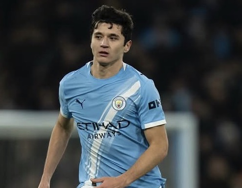
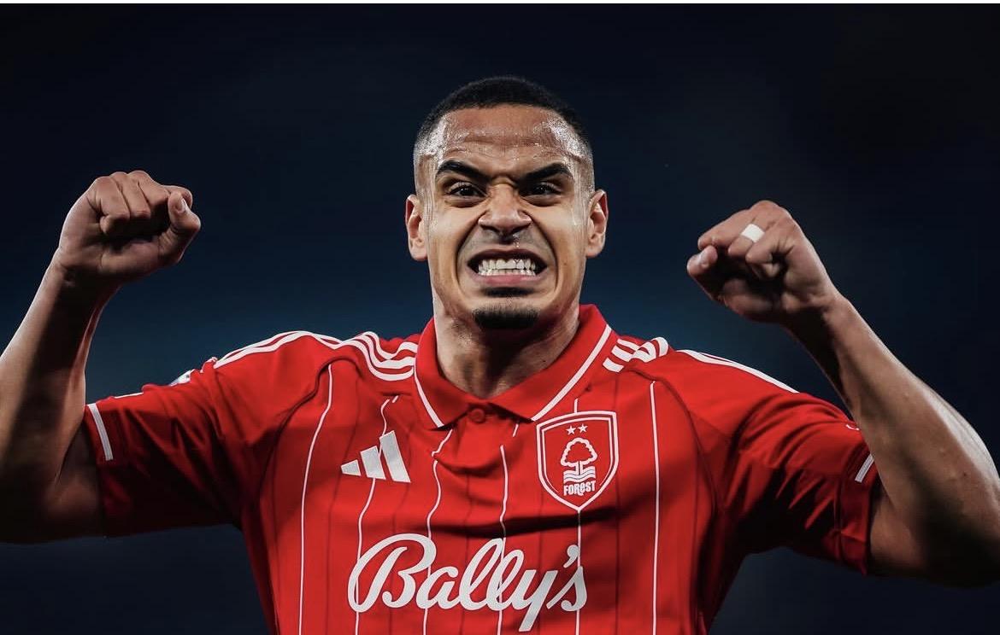
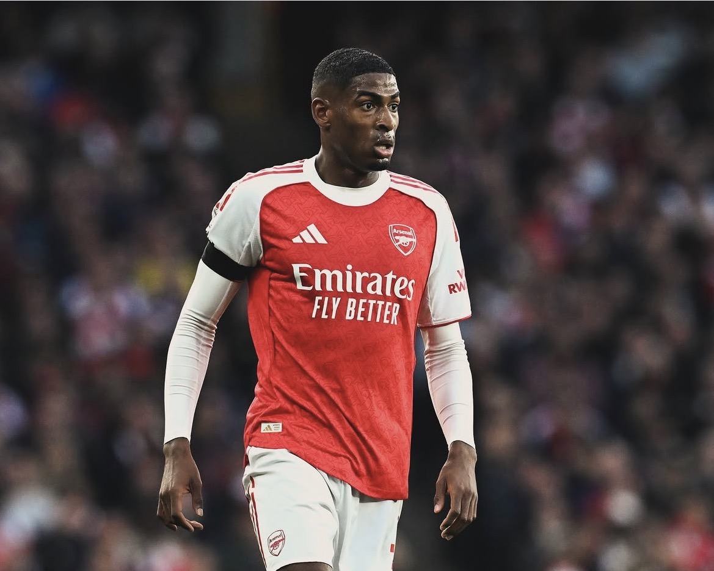

CBAbdukodir Khusanov
所属: Manchester City / 身長: 186cm
マンチェスターシティに所属するウズベキスタン代表DF。強烈なフィジカルを活かした対人守備と、圧倒的なスピードが武器。若くして欧州5大リーグや代表で台頭する、アジア屈指のセンターバック。
次世代を担うPLの至宝たち

CB所属: Manchester City / 身長: 186cm
マンチェスターシティに所属するウズベキスタン代表DF。強烈なフィジカルを活かした対人守備と、圧倒的なスピードが武器。若くして欧州5大リーグや代表で台頭する、アジア屈指のセンターバック。

CB所属: Nottingham Forest/ 身長: 182cm
プレミアリーグのノッティンガム・フォレストに所属するブラジル代表DF。強靭なフィジカルによる対人守備の強さと、高精度な左足のキックから放たれる展開力が武器。攻守に高いポテンシャルを誇る気鋭のセンターバック、毎試合腰パンなのがおもしろ注目ポイント。
所属: Chelsea/ 身長: 187cm
チェルシー所属のイングランド代表DF。貴重な左利きCBで、卓越した足元の技術から放たれる高精度なパスでのビルドアップが最大の武器。高い守備戦術眼も兼ね備え、若くして名門のDFラインを統率する新星。
所属: Manchester United/ 身長: 190cm
マンチェスター・ユナイテッドに所属するフランス代表DF。190cmの長身と高い身体能力を誇り、冷静沈着なカバーリングと対人の強さが武器。10代で名門へ移籍し、世界中から未来の至宝と目される超大型センターバック。

CB所属: Arsenal/ 身長: 191cm
アーセナルに所属するスペイン代表DF。強靭なフィジカルとスピードを活かした対人守備が武器で、センターバックと右サイドバックを高水準でこなします。名門で存在感を放つ、世界が注目する気鋭の大型DF。